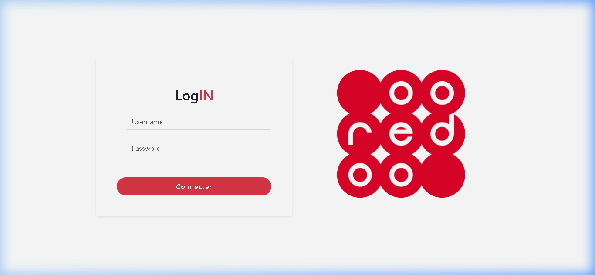
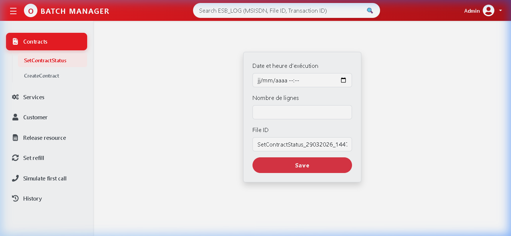
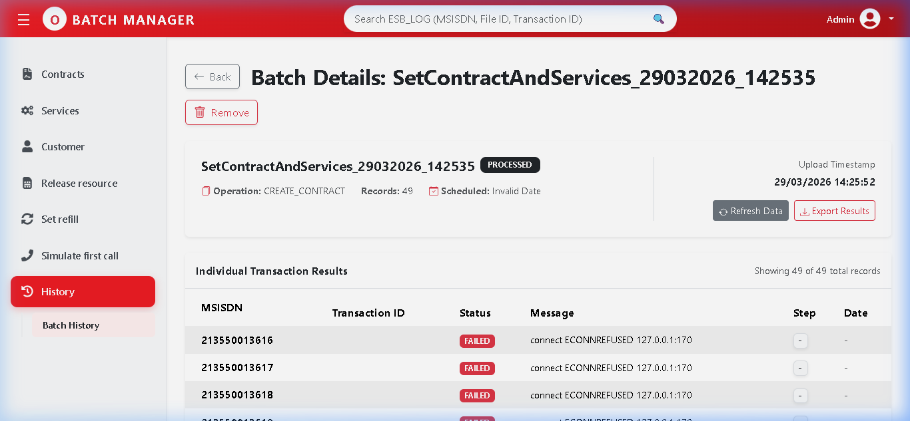
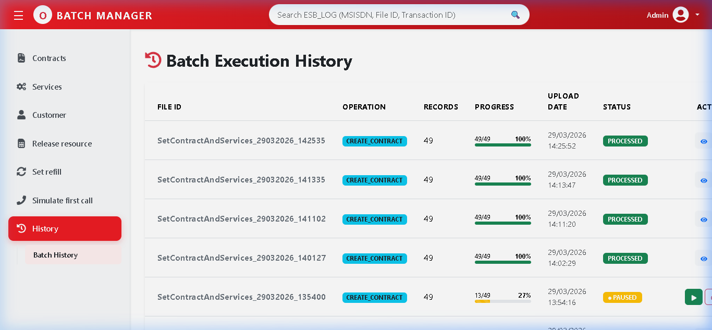
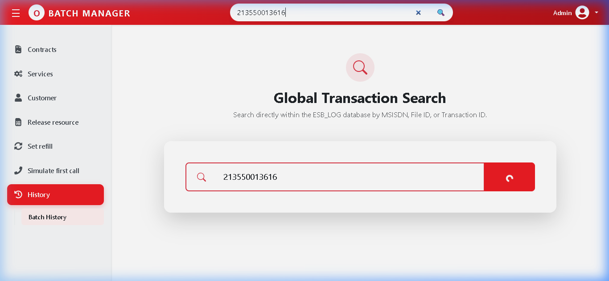

Batch App Presentation
Designed and implemented by Brahamia Oualid
Professional Orchestration Hub for Ooredoo Algeria ESB Services
🏗️ System Architecture Details
Backend Execution Hub (Node.js)
- Service-Oriented Design: Modular API architecture for scalability.
- Oracle DB Persistence: Heavy audit logging using optimized connection pooling.
- Asynchronous Throttling: Integrated node-cron worker to maintain ESB load limits.
- Security Layer: Middleware-based JWT token validation for every request.
- SOAP Integration: Native XML-based communication with the Enterprise Service Bus.
Frontend Orchestrator (React 18)
- State Management: Centralized Context API for global session tracking.
- UI Componentry: PrimeReact for advanced real-time data table visualization.
- Modular Pages: Lazy-loading of service routes (SetStatus, CreateContract).
- Responsive Grid: Bootstrap based layout for multi-device support.
- Live Progress: Webhook/Polling mechanism for background job progress.
🚀 Working Service Modules (Alpha v1.0)
✅ 1. Create Batch Onboarding
Designed for the massive injection of new subscriber profiles directly into the core network.
- Smart File Engine: Automatic validation of MSISDN ranges & file structure (.xlsx/.csv).
- ESB Task Queuing: Triggers parallel contract creation requests.
- Error Handing: Maps ESB internal errors to user-friendly messages.
✅ 2. Set Contract Status Hub
Critical lifecycle management for entire subscriber segments.
- Operations: Activate, Suspend, Deactivate, or Reactive in bulk.
- Throttling Engine: Ensures ESB is not overwhelmed during 100k+ record batches.
- Progress Control: Built-in Pause-Resume-Cancel job flow.
🛠️ NEXT RELEASES: Rate-Plan Modification, 3G Service Activations & Global KPI Dashboard.
🔐 1. System Access & JWT Protocol
A secure portal ensures all bulk operations are attributed to an authenticated user for full non-repudiation.

Figure 1 : Secure Gateway & Session Persistency Layer.
📥 2. Bulk Data Processing Console
The console enables asynchronous file upload. The backend parses data in the background, minimizing UI blockages.

Figure 2 : Dynamic Batch Initiation Manager.
📊 3. Full Transactional Audit (ESB Diagnostics)
Each transaction record displays the raw ESB response, status code, and precise execution timestamp.

Figure 3 : Global transactional audit logs with individual failure diagnostics.
📜 4. Global search & Audit History Hub
Persistent historical storage ensures compliance. The global search allows instant MSISDN-to-Batch lookups across all historical records.


Figure 4 & 5 : Persistent Audit History & Global MSISDN Lookup System.